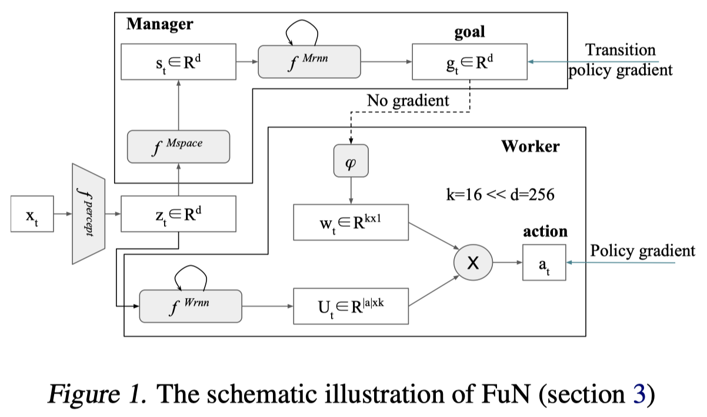

这篇论文提出了FuNs，将智能体决策分为两层——Manager产生子目标、Worker产生动作行为。两层均使用A2C方式进行优化，且梯度互不影响。
推荐程度中等：
- h-DQN式分层，PG式优化
- 隐藏状态空间设置子目标，不需要先验知识
- 上下两层策略均使用A2C的更新方式
- 应用于离散动作空间
简介
论文地址：http://arxiv.org/abs/1703.01161
pytorch复现代码：https://github.com/dnddnjs/feudal-montezuma
这篇论文引入了FeUdal Networks(FuNs)，它是一个新奇的强化学习分层决策结构，它将决策模型分为Manager和Worker：
- Manager，在lower temporal resolution(低时间尺度)上做higher level决策，产生子目标。这个子目标是输入观察observation的隐状态空间上的方向向量，用于指定在$s_t$时刻之后$c$步应该朝着隐空间的什么方向移动；
- Worker，在higher temporal resolution(更密级的时间尺度)上做lower level决策，产生执行的动作。
关注点
如何创建能够学习将其行为分解为有意义的原语，然后重用它们以更有效地获取新行为的智能体是一个长期存在的研究问题。
How to create agents that can learn to decompose their behaviour into meaningful primitives and then reuse them to more efficiently acquire new behaviours is a long standing research question. The solution to this question may be an important stepping stone towards agents with general intelligence and competence.
主要贡献
这篇论文的创新点和特点主要有以下几个：
- 提出一个一致的，端到端的，可微的模型，体现和概括了Feudal RL的原则
- 虽然上下两层都使用A2C的更新方式，但是上层策略的损失函数构造是根据自己提出的Transition Policy Gradients，利用了子目标的语义意义
- 提出了一个新奇的RNN结构，用在Manager模块中——Dilated LSTM，它增强了RNN的记忆能力，允许梯度在大的时间间隔内流动，允许在数百步长上进行有效的反向传播
- 上层控制器产生的子目标不再是显式的状态，而是隐状态空间上的方向向量
优点/效果
FuNs大大提高了长期的信用分配和记忆。
FuN significantly improves long-term credit assignment and memorisation.
鼓励与Manager设定的不同目标相关联的子策略的出现。
encourages the emergence of sub-policies associated with different goals set by the Manager.
文中精要
下图为FuNs的整体框架示意图。
解析：
上图中的灰色部分均为可学习、可微分的网络变量，在Manager框中即由Manager梯度更新，反之亦然。上图中$f^{\text {percept }}$既不属于Manager也不属于Worker，文中也没有提到它如何优化，我猜想它是通过Manager和Worker的Critic网络共享梯度更新优化的。
Manager使用Transition Policy Gradient进行优化，Worker使用Policy Gradient进行优化
$z_{t}=f^{\text {percept }}\left(x_{t}\right)$是特征提取层，CNN之类的，将观测值转换为长度为d的向量
$s_{t}=f^{M s p a c e}\left(z_{t}\right)$是Manager模块中的特征变换层，由几层全连接组成，从图上看维度不变，还是d
$h_{t}^{M}, \hat{g}_{t}=f^{M r n n}\left(s_{t}, h_{t-1}^{M}\right) ; g_{t}=\hat{g}_{t} /\left|\hat{g}_{t}\right|$是Manager模块的子目标输出层，子目标做了归一化操作，其中$f^{M r n n}$是论文中提出的Dilated LSTM
$w_{t}=\phi\left(\sum_{i=t-c}^{t} g_{i}\right)$是将子目标变换为一个可以与Worker动作表示矩阵相乘的向量，看形势上应该属于一个滑动窗口，窗口长度为$c$，在这个长度的一直做移动加和，每一个时间步都根据当前观测值输出子目标$g_i$，然后连续$c$个时间步的子目标加和之后通过$\phi$进行线性变换。
A linear transform $\phi$ maps a goal $g_t$ into an embedding vector $w_t\in R^k$ , which is then combined via product with matrix $U_t$ (Workers output) to produce policy $\pi$.
$h^{W}, U_{t}=f^{W r n n}\left(z_{t}, h_{t-1}^{W}\right)$是Worker的LSTM层，这里没有使用Dilated LSTM
$\pi_{t}=\operatorname{SoftMax}\left(U_{t} w_{t}\right)$是Worker的最终动作概率分布输出层，从文章看起来，FuNs只能应用于离散动作空间，因为其下层策略要产生的矩阵为$\mathrm{U}_{\mathrm{t}} \in \mathrm{R}^{|\mathrm{a}| \mathrm{xk}}$，即需要了解动作的数量。
Worker中的$k$为每个动作embedding向量的长度
Manager损失
Manager的损失函数，或者说是优化目标的梯度是这样的：
其中，$d_{\cos }(\alpha, \beta)=\alpha^{T} \beta /(|\alpha||\beta|)$是余弦相似度。与传统的PG损失不同，这里没有使用$log$操作，而且使用余弦相似度。由Critic网络的输入是$x_t$我猜想到上面结构图中的percept部分是是由Critic网络的梯度优化的。
注意，虽然$s_{t+c}$与$s_t$也是由Manager模块产生的，但是在优化中$s_{t+c}-s_{t}$并不传导梯度。
传统的PG目标函数梯度应该是这样的：
作者根据分层强化学习中上层策略产生不是动作，而是子目标，将上边式子通过分析、推理改写成下边这种形式：
$o_{t}=\mu\left(s_{t}, \theta\right)$选择子策略，$p\left(s_{t+c} | s_{t}, o_{t}\right)$表示在子策略条件下经过$c$步决策之后的隐状态分布，$\pi^{T P}\left(s_{t+c} | s_{t}\right)=p\left(s_{t+c} | s_{t}, \mu\left(s_{t}, \theta\right)\right)$描述给定起始状态的结束状态的分布，$s_{t+c}=\pi^{T P}\left(s_{t}\right)$是转移函数。
作者为了推导出$\nabla_{\theta} d_{\cos }\left(s_{t+c}-s_{t}, g_{t}(\theta)\right)$这种形式，假设转移模式是一种特殊的形式：$s_{t+c}-s_t$这个隐状态空间上的实际“运动”方向向量服从von Mises-Fisher分布，这个分布的均值即为上层策略产生的$g_t$，根据这个分布的性质，可以推导出如下公式：
由此取对数可以推导出上边的梯度形式。
A naive application of policy gradients requires the agent to learn from samples of these trajectories. But if we know where these trajectories are likely to end up, by modelling the transitions, then we can skip directly over the Worker’s behaviour and instead follow the policy gradient of the predicted transition. FuN assumes a particular form for the transition model: that the direction in state-space, s t+c −s t , follows a von Mises-Fisher distribution. Specifically, if the mean direction of the von Mises-Fisher distribution is given by g(o t ) (which for compactness we write as g t ) we would have p(s t+c | s t , o t ) ∝ e d cos (s t+c −s t ,g t ) . If this functional form were indeed correct, then we see that our proposed update heuristic for the Manager, eqn.7, is in fact the proper form for the transition policy gradient arrived at in eqn.10.
Worker损失
Worker的损失与传统的A2C一致：
这里优势函数的target目标既包含外部奖励$R_t$，也包含内部奖励$R_t^I$，并用一个超参数$\alpha$来控制内部奖励的影响程度。注意，这里的Critic输入同样为$x_t$，所以我猜想特征表示部分由Manager和Worker各自的Critic共享梯度进行优化。
内部奖励是这么定义的：
从这个公式可以看出，每一步的内部奖励需要往前计算$c$步余弦相似度，因此，如果设置的子目标持续步长$c$很大，那么将会引入额外的轨迹长度倍的计算开销。
作者使用方向向量，是因为与假设可以将智能体带到（可能）任意新的绝对位置相比，Worker能够更可靠地引起状态在隐空间上的方向转移。（真拗口）
We use directions because it is more feasible for the Worker to be able to reliably cause directional shifts in the latent state than it is to assume that the Worker can take us to (potentially) arbitrary new absolute locations.
Note that the Worker’s intrinsic reward (eqn. 8) is based on the log-likelihood of state trajectory. Through that the FuN architecture actively encourages the functional form of the transition model to hold true. Because the Worker is learning to achieve the Manager’s direction, its transitions should, over time, closely follow a distribution around this direction, and hence our approximation for transition policy gradients should hold reasonably well.
Dilated LSTM
说实话，这里没有完全理解。
公式是这样的：
其中$\theta^{L S T M}$是共享的LSTM网络参数，cell_state是一个组，$h=\left\{\hat{h}^{i}\right\}_{i=1}^{r}$。$r$是一个dilation radius，也就是说这个LSTM网络包含许多个cell_state，也就是core。式子中的百分号%是做一个模的操作。然后作者说他们在实验中radius的设置与horizon相同，即$c=r$。
我的猜想是这样的：
作者虽然想让上层策略在一个粗粒度的时间上进行决策，即产生子目标，但是下层策略的内部奖励依赖连续的子目标，也就是每一步的子目标。在这种情况下，上层策略必须每一步都产生子目标，那么既然产生了，不优化不就浪费了嘛，怎么利用呢？于是作者对每一时刻的子目标也做了平滑处理，即$w_{t}=\phi\left(\sum_{i=t-c}^{t} g_{i}\right)$。
问题在于作者想让上层策略的子目标可以持续$c$个时间步，$c$个时间步之后便失效，也就是说，对于上层策略，它的经验序列应该是这样的$s_t, s_{t+c}, s_{t+2c} … s_{t+nc}$，但是由于每一时间步都存在子目标，那么也存在这样的序列$s_{t+1}, s_{t+c+1}, s_{t+2c+1} … s_{t+nc+1}$。针对这种情况，其实有两种处理手段：
- 将收集到的连续序列$s_t, s_{t+1}…$按时间步$c$切分成$c$条轨迹，然后分批次输入到LSTM中进行训练。其实相当于数据预处理过程
- 直接给LSTM输入收集到的连续序列$s_t, s_{t+1}…$，设置$r=c$组cell_state，也就是为$c$条轨迹设置$c$个不同的起始cell_state，由此来处理不切分的交叉时间尺度的经验序列，让梯度随着cell_state按不同轨迹自动传播。
作者就是使用了第2种的处理方式。另外，作者在做对比实验的时候，给LSTM设置步长为40，给Dilated LSTM设置步长400，子目标持续步长$c=10$，也应该是这个道理，因为400/10=40，其实每个子目标序列的持续时间都是一直的，都是40个时间步。
从这个角度分析，我觉得作者说“它促进了更长时间的信用分配以及增强了RNN记忆能力”是一个噱头，因为其实是它只是在共享了LSTM的参数的基础上，对$c$条连续上层子目标序列分别做了LSTM运算，本质上没有将长时间的记忆融合进去。
与h-DQN和OC的比较
FuNs可以视为是h-DQN与OC的部分结合，但又不尽相同。
h-DQN vs. FuNs
相同：
- 都是显式地将决策模型分为两层，上层决策子目标，下层决策具体动作
- 上层都是最大化外部环境累计期望回报
- 下层都使用了内在奖励
- 两者都将子目标作为下层策略的输入
不同：
- FuNs上层产生的子目标是智能体的观测值在隐状态空间下的方向向量，而h-DQN上层产生的子目标是需要人为设计的，往往在原始观测状态空间上设置。
- FuNs不需要先验知识
- FuNs优化下层模型时，既使用了环境外部奖励，也使用了基于子目标产生的内部奖励，而h-DQN只使用了内部奖励
- h-DQN是Q-Learning式的优化方式，即最小化均方误差，而FuNs是PG式的优化方式，即最大化累计期望奖励
OC vs. FuNs
相同：
- 两者都是用了PG式的更新方式
- 两者都是端到端的
不同：
- OC需要判断option的终止条件，FuNs固定上层策略的步长$c$
- OC需要指定option的数量（离散），而FuNs产生的子目标为方向向量（连续）
- OC需要为每个option构造一个下层策略模型，而FuNs共同一个下层策略模型
- OC的下层策略输入不包含option，只是根据option选到下层策略，而FuNs的下层策略需要包含子目标输入
- OC没有引入内在奖励，FuNs使用了内在奖励
- OC可以应用于连续动作空间，而FuNs用于离散动作空间